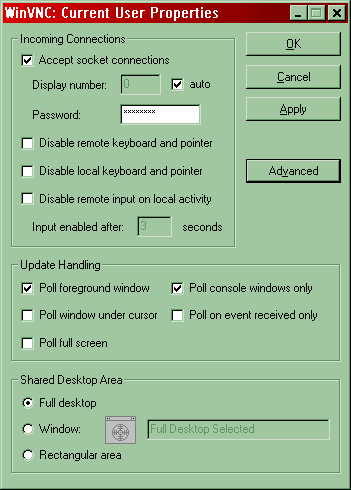
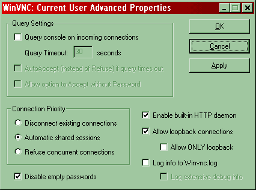
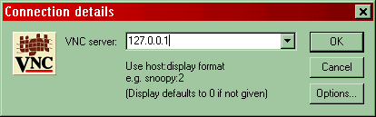
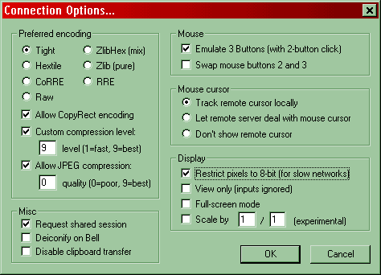

Stampa e tunnel criptati micro HOWTO
(ovvero HOWTO*10^-6)
( for more information see: http://www.gnu.org/licenses/gpl.html )
Perché un altro HOWTO sulla stampa
Strumenti sw provati ed utilizzati
Casi della vita
Note “a latere”
Appendici
Di certo non se ne sentiva il bisogno; tuttavia ho voluto mettere a disposizione di quei (pochi) che ne avessero bisogno tutte le esperienze fatte da me su lavoro per quanto riguarda i canali criptati e le stampe in remoto.
L'esigenza nasce dalla necessità di connettersi dalla rete pubblica ad un server (unix o windows indifferentemente) utilizzare una applicazione residente sul server (anche con logica client-server) e stampare sulla stampante fisicamente connessa al client o su di una stampante alla quale l'utente del client possa facilmente accedere. Il tutto con la sicurezza che deriva dall'uso di un canale criptato e quindi ragionevolmente al sicuro da potenziali e maliziosi “sniffamenti”.
OpenSSH (shell remota criptata)
Credo che non ci sia bisogno di presentazione. Anche se periodicamente questo demone è afflitto da bachi o da troiani resta il non plus ultra delle shell remote criptate
OpenSSH per Unix/linux http://www.openssh.org
OpenSSH per Windows http://www.networksimplicity.com/openssh
ZebeDee (tunnelling criptato per tcp/udp)
Grandissima utility che premette veramente di tutto. E' simile (nello spirito) a CIPE ma in user space (quindi è più semplice da configurare ed installare) e dalla funzionalità ottima sia in Windows che in Unix/linux.
ZeBeDee per Windows/Unix http://www.winton.org.uk/zebedee
rlpr (un client enhanced per lpd)
Un'altra utility salvavita. Si comporta come lpr con in più la possibilità di indirizzare stampanti remote non descritte in /etc/printcap e di interagire con demoni lpd che possono rispondere anche su porte diverse da 515/tcp.
rlpr per Unix ftp://truffula.com/pub/rlpr-2.04.tar.gz
rdesktop (Terminal client)
Un piccolo Terminal client tutto sommato usabile
rdesktop per Unix/Linux http://www.rdesktop.org/
Putty (telnet-ssh client per Windows)
Il client telnet free per eccellenza
Putty + plink http://www.chiark.greenend.org.uk/~sgtatham/putty
SmarTerm (telnet-ssh client + LPD server)
Client telnet e (da poco) anche ssh il cui unico pregio è quello di fornire nel prezzo pagato anche un demone lpd per Windows con discrete funzionalità.
SmarTerm http://www.esker.com/esker_com/products/smarterm_home.html
Sono un strenuo sostenitore del metodo socratico, perciò elencherò una serie (il più possibile esaustiva) di casi pratici cercando di spiegare più chiaramente possibile le soluzioni da me adottate per la risoluzione del problema.
1) Servente host NT/W2000 con IP statico + client W9x/Me/XP/2000 con stampante fisicamente connessa al client. L'applicazione sia residente sull'Host
La situazione è schematizzata al meglio dal seguente grafico:
[host/server]NT/W2000 +APP <=====> [client] W9x/Me/XP/2000--> [printer]
IP = 10.0.0.10 (statico) | IP = ? (fornito dal provider)
+
rete pubblica (insicura)
+
tunnelling criptatoLa nostra necessità è naturalmente utilizzare l'applicazione sull'host e stampare sul client veicolando il tutto con un tunnel criptato.
Soluzione a)
Uso di Terminal server + OpenSSH su [host/server] e Putty + Terminal client su [client]
Configurazione del canale criptato:
Installare e configurare OpenSSH sull'host (le doc a corredo sono sufficienti);
per il client usare putty (o meglio plink se la shell non interessa) per veicolare il protocollo terminal server su porta locale;
Esempio
Se sull'host il servizio Terminal Server sta su 163/TCP sul client basterà lanciare, a connessione con il provider avvenuta, il seguente comando (uso plink data la sua affinità con il comando unix ssh):
plink -ssh -L 163:10.0.0.10:163 10.0.0.10
Ovviamente le porte possono essere anche diverse i.e. -L 3000:10.0.0.10:2048 e così via, basta solo ricordare che il primo valore rappresenta la porta locale (ossia quella sul client) mentre l'ultimo rappresenta la porta sul server che interessa veicolare.
A questo punto tutto quello che ci resta da fare è lanciare sul nostro client il Terminal client e usando come host il localhost (127.0.0.1) e come porta quella che ci ci siamo scelta (163, 3000 etc)
per vederci comparire la login di NT/W2000 e lanciare il nostro utente e le nostre app.
E la stampante? Bè in questo caso Zio Bill ci fa un regalo (lo so non è da lui ma forse gli è scappato :)) il protocollo Terminal server veicola le stampati del client e le fa comparire come stampanti di sistema sull'host; i nomi di queste posso essere singolari ma normalmente contengono cose del tipo \\Prima-Sessione\HPColor dove HPcolor è la nostra stampante.
A livello tecnico il tutto può essere spiegato dal fatto che Terminal server trasporta in modo trasparente il NetBios e quindi anche le Print-Share.
Soluzione b)
Uso di Terminal server + ZebeDee su [host/server] e Terminal client + ZeBeDee su [client]
Nel caso OpenSSH non si possa/voglia usare si può ricorrere all'uso di ZeBeDee.
Passiamo direttamente alla configurazione del canale criptato prendendo spunto dall'esempio descritto sopra
Installato ZeBeDee su server lo si esegue con i seguenti parametri:
zebedee -s 10.0.0.10:163
In sintesi si mette in ascolto come server (-s) e mette a disposizione il servizio 163
(Naturalmente può anche essere permanentemente in ascolto)
Installato ZeBeDee su client dopo la connessione al provider lo si esegue con i seguenti parametri
zebedee 163:10.0.0.10:163
In sintesi zebedee come client veicola il servizio 163 residente su 10.0.0.10 in localhost 163 (zebedee ha anche delle opzioni che gli permettono di scegliere l'ip su cui fare il bind, qui non usate per semplicità)
Si usa ora il Terminal Client nel modo descritto sopra e il gioco è fatto.
Piccola nota su ZeBeDee.
Questo sw permette cose egregie; per semplicità didattica è stato invocato via linea comando ma, può essere installato come servizio, legge le configurazioni da file ed anche in grado di effettuare un port-forwarding su macchine differenti da quelle dove risiede. Veramente un coltellino svizzero (Swiss knife) per i tunnelling criptati. E' anche possibile usare per l'autenticazione dei client il meccanismo chiave pubblica/privata. Consiglio prima dell'utilizzo brutale di leggersi attentamente le doc del pacchetto si avrà così modo di apprezzare la grande versatilità di questo piccolo pezzo di Open-Source.
2) Servente host NT/W2000 con IP statico + client Unix/Linux con stampante fisicamente connessa al client.L'applicazione sia residente sull'Host.
La situazione è schematizzata al meglio dal seguente grafico:
[host/server]NT/W2000 +APP <=====> [client] Unix/Linux--> [printer]
IP = 10.0.0.10 (statico) | IP = ? (fornito dal provider)
+
rete pubblica (insicura)
+
tunnelling criptatoLa nostra necessità è naturalmente utilizzare l'applicazione sull'host e stampare sul client veicolando il tutto con un tunnel criptato.
Soluzione a)
Uso di Terminal server + OpenSSH +Lpr (lpd client) su [host/server] e ssh + XFree86 + rdesktop + Lpd su [client]
Configurazione del canale criptato:
installare OpenSSH server sull'host;
installare Lpr sull'host; normalmente questo client viene fornito di default con le installazioni di W2000 lo si deve configurare come se il server Lpd rispondesse su localhost (127.0.0.1) (in realtà sarà veicolato sulla macchina client)
installare ssh (almeno la parte client), xfree86, lpd (o anche CUPS a patto di configurare una stampante come BSD) e rdesktop sul client
Esempio
Per configurare il client lpr su W2000 rimando agli Help del sistema suddetto bisogna fare solo attenzione a questi 2 semplici fatti:
il nome della coda deve coincidere sia sul client che sul server; i.e. \\127.0.0.1\HPColor in W2000 e HPColor in /etc/printcap su Unix/Linux
Il driver di stampa deve risiedere o in W2000 o in Unix/Linux; se è presente in entrabi i lati o se è assente in entrambi le stampe possibili saranno solo quelle di testo (e occhio alla conversione LF/CR)
Sul client Unix una volta connessi al provider si userà ssh
ssh -L 163:10.0.0.10:163 -R515:127.0.0.1:515 10.0.0.10
Cosa s'è fatto qui? Semplicemente abbiamo detto al client ssh di aprire 2 canali di cui il primo (-L) veicola il servizio Terminal Server dal server W2000 al client unix , il secondo (-R) veicola il servizio LPD dal client unix al server W2000
Lanciando rdesktop dal nostro client con il nome dell'host 127.0.0.1 comparirà il login di W2000 e se stamperemo sulla stampante di sistema W2000 \\127.0.0.1\HPColor la stampa arriverà sul nostro client (tempi di trasferimento permettendo :)).
Soluzione b)
Uso di Terminal server + ZeBeDee +Lpr (lpd client) su [host/server] e ZeBeDee + XFree86 + rdesktop + Lpd su [client]
Quello che s'è appena fatto con OpenSSH è naturalmente possibile farlo anche usando ZeBeDee solamente che in questo caso la configurazione del tunnel criptato sarà più complicata.
Procediamo con una configurazione d'esempio come al solito
Per veicolare il servizio Terminal server (che, nel nostro esempio, sta su 163/tcp) sull'host W2000 si lancerà:
zebedee -s -T20000 10.0.0.10:163
In sintesi zebedee come server (-s) rimane in ascolto su porta 20000/tcp (-T) per la connessione a zebedee client e mette a disposizione il servizio (porta) 163/tcp
Mentre sul client unix
zebedee -T20000 163:10.0.0.10:163
Credo che il significato sia ormai chiaro
Per veicolare il servizio Lpd (che, va ricordato, sta su 515/tcp sul client Unix) sull'host W2000 si lancerà:
zebedee -l -T20001 515:*:515
In sintesi qui zebedee è usato come client (ricordo che lpd sta sul client unix) in listen mode (-l) ossia aspetta che sia un server ad iniziare il colloquio rimane in ascolto su porta 20001/tcp (-T) inoltre attende una connessione da qualunque indirizzo ip (*) per il servizio 515/tcp
Sul client unix
zebedee -d -c 10.0.0.10 -T20001 127.0.0.1:515
In sintesi zebedee come server (-d) cerca la connessione con un client (-c) in 10.0.0.10 utilizzando la porta 20001/tcp (-T) e mette a disposizione il servizio 515/tcp.
Una volta connessi si procede come descritto nella Soluzione a)
3) Servente host Unix/Linux con IP statico + client W9x/Me/XP/2000 con stampante fisicamente connessa al client. L'applicazione sia residente sull'Host
La situazione è schematizzata al meglio dal seguente grafico:
[host/server]Unix/linux +APP <=====> [client]W9x/Me/XP/2000--> [printer]
IP = 10.0.0.10 (statico) | IP = ? (fornito dal provider)
+
rete pubblica (insicura)
+
tunnelling criptato
La nostra necessità è naturalmente utilizzare l'applicazione sull'host e stampare sul client veicolando il tutto con un tunnel criptato. In questo caso specifico le applicazioni residenti su Unix non richiedono l'uso di Xfree86 (nel mio caso erano semplicemente dei programmi di calcolo) richiedono semplicemente un client di tipo telnet
Soluzione a)
ZebeDee + rlpr + telnetd su [host/server] e ZeBedee + SmarTerm +lpd su [client]
SmarTerm è stato usato solo per la presenza in bundle di un demone lpd dalle discrete prestazioni che trasforma le stampanti di sistema Windows in code di stampa con nomi a piacere. E' ovvio che avendo a disposizione un altro demone lpd per esempio quello che forniscono con alcuni Xserver su W9x/ Me (su XP/2000 Client esiste un server lpd installabile) il client telnet potrebbe essere qualunque anche quello minimale presente nelle installazioni di W9x/Me/XP/2000
La configurazione del lato server non presenta particolari problemi ricalcando quelle che abbiamo già visto con una particolarità che adesso illustrerò:
Per veicolare il servizio telnet che sull'host unix/linux si lancerà:
zebedee -s -T20000 10.0.0.10:23
Per veicolare il servizio Lpd (che, va ricordato, sta su 515/tcp sul client Unix) sull'host Unix/Linux si lancerà:
zebedee -l -T20001 515:*:515
Nel caso esista già un servizio lpd locale all'host Unix/linux la riga sopra andrà così modificata:
zebedee -l -T20001 2048:*:515
In sintesi la porta locale su cui sarà veicolato lpd del client diventerà la porta 2048 ed il comando di stampa da dare sarà del tipo:
rlpr -–port=2048 -Hlocalhost -PnomecodastampanteWindows file .....
rlpr agisce come il comando lpr senza però la necessità di avere in /etc/printcap una entry per la stampante invocata e soprattutto permettendo di specificare una porta qualunque per arrivare al demone lpd
Naturalmente dettagli maggiori su questo potranno essere trovati sulle doc di rlpr (pagine man)
Nel client W9x/Me/2000/XP avremo:
zebedee -T20000 23:10.0.0.10:23
ed inoltre per lpd:
zebedee -s -c 10.0.0.10 -T20001 127.0.0.1:515
Il significato è stato già spiegato precedentemente.
Soluzione b)
ZebeDee + Samba + telnetd su [host/server] e ZeBedee + Putty su [client]
E' la soluzione più complicata perchè si basa sull'idea di propagare attraverso ZeBeDee gli share Netbios. E' anche la soluzione che funziona peggio non tanto dal punto di vista prestazionale quanto da quello dell'affidabilità. Questo deriva senz'altro dal numero di esperimenti limitato che ho potuto fare e con non mi hanno permesso a tutt'oggi di formalizzare in modo chiaro la soluzione. Insomma per dirla breve alle volte va alle volte no e, per quanto abbia un idea del perchè, non sono ancora sicuro di come risolvere compiutamente la cosa. Quanto descritto in seguito va perciò preso con beneficio d'inventario in attesa che la situazione mi si chiarisca completamente.
Per propagare gli share NetBios abbiamo bisogno di lavorare sulle porte seguenti:
137/tcp – 137/udp, 138/tcp - 138/udp, 139/tcp - 139/udp
Dal lato server dopo aver configurato samba possiamo lanciare zebedee con i seguenti parametri:
zebedee -l -U 137-139/tcp,137-139/udp:*:137-139/tcp,137-139/udp
Dal lato client
zebedee -s -U -c 10.0.0.10 127.0.0.1:137-139/tcp,137-139/udp
A questo punto se tutto è andato bene con smbprint (uno script che invoca smbclient) posso arrivare alla stampante del lato client a patto che abbia configurato la medesima come stampante condivisa. Anche qui occhio ai driver che vanno installati correttamente sul lato client, altrimenti gli unici file stampabili sono quelli di testo.
4) Servente host Unix/Linux con IP statico + client Unix/linux con stampante
Questo ed ultimo caso è risolvibile come combinazione degli altri già citati. In questo caso i demoni di stampa saranno (presumibilmente) entrambi lpd e quindi nel tunnelling si dovrà tener conto di spostare la porta remota in una delle tante porte alte aperte disponibili.
Tutti i casi menzionati sono stati realmente provati ossia non esiste alcun esempio che, almeno per breve tempo, non sia stato funzionante.
Per esigenze di sintesi non mi sono sono soffermato sul problema utenti/permessi che, tra l'altro, è gestito in maniera differente tra W9x,Me,W2000, e Unix/Linux.
Ho sorvolato anche sulla crittografia che ritengo argomento noto comunque approfondibile compiutamente consultanto la documentazione dei pacchetti citati e senz'altro documenti in rete.
5.1 File di configurazione di ZeBeDee
Come accennato ZebeDee può leggersi la configurazione oltre che da linea comando anche da file (parametro -f) qui di seguito riporto i file relativi a alcuni esempi citati con ovvia estensione per gli altri:
linea comando:
zebedee -s 10.0.0.10:163
equivalente con file di configurazione (il nome del file è anch'esso un esempio; può essere infatti qualunque):
zebedee -f server.zbd
struttura di server.zbd (E' un file ascii editabile manualmente)
#
# Sample Zebedee server configuration file
#
# This shows the use of many, but not all, of the configuration file
# options available for use by a server.
#
# $Id: index.html,v 1.1.1.1 2006/04/16 16:13:49 pragma Exp $
verbosity 3 # Slightly more than basic messages
# Comment out the following line once you have read the comments
# in this file and enabled or disabled the appropriate options!
message "Terminal Server redirector"
detached false # You will probably want this 'true' for normal
# use but I want to make sure that you see the
# preceding message if you haven't edited this.
server true # Yes, it's a server!
compression zlib:9 # Allow maximum zlib compression
keylength 256 # Allow keys up to 256 bits
keylifetime 36000 # Shared keys last 10 hours
maxbufsize 16383 # Allow maximum possible buffer size
# Uncomment the following line to log messages to a local file.
#
logfile './server.log'
#
# Or to log to the system logging facility uncomment this:
#
# logfile SYSLOG (solo per unix)
keygenlevel 2 # Generate maximum strength private keys
# Uncomment the following line if you want to use a fixed private
# key stored in a static file. The file should contain a line of
# the form "privatekey hexadecimal-key-string". This file should
# be readable by the user running Zebedee but no-one else.
#
# include 'server.key'
# To validate the identity of clients use a line something like
# the following:
#
# checkidfile './clients.id'
# The "redirect" expression can be use to set the default ports
# allowed when a target specification consists of a hostname but
# no other ports. The "redirect none" statement prohibits
# tunnelling anywhere by default.
#
redirect none
# Set up allowed targets. Note that there are NO targets allowed
# by this file by default. You must explicitly edit it to enable
# them.
target 10.0.0.10:163
# end
Per il client
lienea comando:
zebedee 163:10.0.0.10:163
equivalente con file di configurazione:
zebedee -f client.zbd
struttura di client.zbd
#
# Saranno qui per brevità indicate solo le opzioni che variano
#
message "Terminal Server client"
detached true # You will probably want this 'true' for normal use
server false #
Serverhost 10.0.0.10
tunnel 163:10.0.0.10:163
# end
Passiamo ad un ulteriore caso
linea comando
zebedee -s -T20000 10.0.0.10:163
equivalente con file di configurazione:
zebedee -f server1.zbd
struttura di server1.zbd
#
# Saranno qui per brevità indicate solo le opzioni che variano
#
message "Terminal Server"
detached true # You will probably want this 'true' for normal use
server true
serverport 20000
target 10.0.0.10:23
# end
linea comando
zebedee -T20000 163:10.0.0.10:163
equivalente con file di configurazione:
zebedee -f client1.zbd
#
message "Terminal Client"
detached true # You will probably want this 'true' for normal use
server false
serverport 20000
Serverhost 10.0.0.10
tunnel 163:10.0.0.10:163
# end
Linea comando (N.B. anche se agisce da client zebedee è invocato dal server):
zebedee -l -T20001 515:*:515
equivalente con file di configurazione:
zebedee -f server2.zbd
#
message "Lpd Client"
detached true # You will probably want this 'true' for normal use
server false
serverport 20001
listenmode true
tunnel 515:*:515
# end
Linea comando ( N.B. anche se agisce da server zebedee è invocato dal client):
zebedee -s -c 10.0.0.10 -T20001 127.0.0.1:515
equivalente con file di configurazione:
zebedee -f client2.zbd
#
message "Lpd Server"
detached true # You will probably want this 'true' for normal use
server true
serverport 20001
clienthost 10.0.0.10
target 127.0.0.1:515
# end
Spero che questi esempi siano chiarificatrici della sintassi dei file ZeBeDee. Un'ultima caratteristica che mi preme evidenziare è che quando ZeBeDee agisce come client oppure come server in clienthost (e deve quindi avere un client in listenmode) può veicolare la sua connessione in http tunnelling e quindi passando attraverso un httpproxy (molto comodo!) perfora de facto il proxy stesso (operazione intrinsecamente pericolosa riflettendoci ;-)).
Riga di configurazione (da aggiungere ad un file conf di ZeBeDee):
#
httpproxy ipproxy:proxyport
# per esempio
# httpproxy 10.10.1.10:8080
# oppure
# httpproxy proxy.pino.org:3128
5.2 Uso di TightVNC e ZeBeDee
TightVNC ( http://www.tightvnc.com ) è una versione migliorata di VNC (http://www.uk.research.att.com/vnc/).
In che senso migliorata?
Usa estensivamente la zlib e la compressione jpeg permettendo così l'uso agevole di connessioni con limitata banda passante (buoni risultati si ottengono già con una connessione ISDN a 64Kbits o V92 a 56kbits);
rimane perfettamente compatibile con l'avo VNC permettendo così a client e server differenti il colloquio anche se le caratteristiche aggiuntive sono disabilitate;
abilita la connessione anche su localhost permettendo così l'uso di tunnel crittografici tipo ZeBeDee ed altri;
il minuscolo web server interno (tecnologia Java) è stato adeguato cosicchè anche l'uso via browser ora beneficia dei miglioramenti introdotti.
Per brevità ecco qui di seguito un esempio di configurazione.
(Il test è stato fatto con macchine Windows ma è replicabile su macchine *nix dal momento che i sw utilizzati lavorano ottimamente su entrambe le piattaforme sw)
Lato server (nell'esempio IP Host = 10.0.0.10 come al solito)
Per ZeBeDee
zebedee -s 10.0.0.10:5800-5999
Per TightVNC (snapshot di $win)

E le caratteristiche avanzate (snapshot di $win):

Per il lato client
zebedee 5800-5999:10.0.0.10:5800-5999
Per TightVNC (snapshot di $win)

E le caratteristiche avanzate (snapshot di $win):

Stunnel e servizi pop3, imap, smtp, lpd
Per completezza voglio accennare ad un altro tunnel crittografico che usavo prima di venire a conoscenza di ZeBeDee. Stunnel (http://www.stunnel.org) è un canale criptato molto interessante e può essere usato per veicolare quei servizi che non hanno o per vari motivi contingenti non possono avere tale capacità. Tecnicamente parlando si appoggia al TSL di OpenSSL.
Anche in questo caso il tunnel presenta pregi e difetti:
Pregi
semplice da configurare ed installare;
multipiattaforma (*nix e Win$);
è possibile usare sia un file di configurazione che una serie di switch via linea comando.
Difetti
non permette di avere un client in listenmode (come ZeBeDee) e quindi di veicolare dei servizi senza conoscere a priori gli IP;
non riesce a veicolare il servizio FTP (mentre ZeBeDee lo può fare) dal momento che FTP daemon utilizza (specialmente in PASV mode) più porte per il data transfer;
non usa compressione del protocollo;
non permette l'http-tunnelling e quindi non connette attraverso un http-proxy.
Qui di seguito c'è una traccia del suo file di configurazione generico (ossia quello del tarball) e poi un esempio che uso (usavo :-)) al lavoro.
# Sample stunnel configuration file
# Copyright by Michal Trojnara 2002
# Comment it out on Win32
cert = /etc/stunnel/mail.pem
chroot = /var/run/stunnel/
# PID is created inside chroot jail
pid = /stunnel.pid
setuid = nobody
setgid = nogroup
# Authentication stuff
#verify = 2
# don't forget about c_rehash CApath
# it is located inside chroot jail:
#CApath = /certs
# or simply use CAfile instead:
#CAfile = @prefix@/etc/stunnel/certs.pem
# Some debugging stuff
#debug = 7
#output = stunnel.log
# Use it for client mode
#client = yes
# Service-level configuration
[pop3s]
accept = 995
connect = 110
[imaps]
accept = 993
connect = 143
[ssmtp]
accept = 465
connect = 25
[s1]
accept = 5000
connect = mail.osw.pl:110
# delay = yes
[s2]
accept = 5001
connect = mail.osw.pl:25
#[https]
#accept = 443
#connect = 80
#TIMEOUTclose = 0
Uso di un pop3 server su host 10.0.0.10
per il server (conf via linea comando):
stunnel -d 110 -r 10.0.0.10:110
per il client (conf via linea comando):
stunnel -c -d pop3 10.0.0.10:110
Lascio ad una lettura della man page il significato delle opzioni via linea comando (peralto intuibili)
Spero che il tutto sia stato abbastanza chiaro e divertente (che è poi la cosa sempre più importate).
In futuro a mano a mano che le mie prove progrediranno aggiornerò il tutto.
Per dubbi, consigli, pernacchie ed insulti (pochi spero ;-)), ringraziamenti, donazioni in solido, suggerimenti e correzioni scrivete a ZioPino <metaluxisdn@tiscalinet.it>
Ad maiora!!!!!!!!!